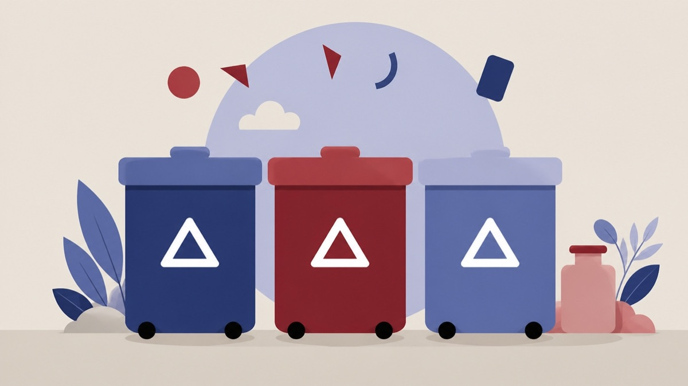

På dagsordenen 2. december, Klima, Miljø og Planudvalget, Sorø
Opfølgning på initiativretssag fra Nye Borgerlige (D) om afskaffelse af haveaffaldsgebyr

Kort fortalt
- Hvem
- Klima, Miljø og Planudvalget, Sorø Kommune
- Hvornår
- Onsdag 2. december 2026
- Status
- På dagsordenen. Sagen behandles på mødet.
Er noget forkert her? Skriv til os
Hvad kan du gøre?
- Skriv til politikerne
- Udvalgets møder er lukkede, men du kan skrive til medlemmerne før mødet onsdag 2. december 2026. Du finder dem på soroe.dk.
Læs hele sagen Kommunens egen tekst
Indstilling
ADMINISTRATIONEN INDSTILLER, AT
1. Den nuværende praksis for opkrævning af haveaffaldsgebyr fastholdes i 2027, da det
findes mest hensigtsmæssigt at der udarbejdes en samlet revidering af
affaldsordningerne til senere politisk godkendelse.
Beskrivelse af sagen
Baggrund
Kommunalbestyrelsen besluttede på møde den 4. november 2026 at oversende et
initiativretsforslag fra Nye Borgerlige (D), punkt nr. 145, til behandling i Miljø, Klima og
Planudvalget. I initiativretsforslaget indstillede Nye Borgerlige (D), at:
1. Kommunalbestyrelsen beslutter at videreføre haveaffaldsordningen som en takstfinansieret
ordning, således at alene de borgere, der benytter ordningen, opkræves betaling, samt at
ordningen evalueres efter ét år.
Forslagsstiller indsendte følgende begrundelse for forslaget:
”Primært for at fjerne gebyret som forpligter alle husstande til at betale for en ydelse, mange
ikke bruger.
Sekundært ønsker Nye Borgerlige haveaffaldsgebyret fjernet fordi gebyret, set fra et natur
perspektiv, ikke giver mening, da bevarelse af kvist og kvas er et livsvilkår for pindsvinenes
trivsel.
Nye Borgerlige mener at kommunernes monopol på affaldsområdet kræver, at man som
kommunalbestyrelse forvalter affaldsområdet med respekt for borgernes penge. Derfor giver
haveaffaldsgebyret til alle ikke mening for de mange der ikke benytter tiltaget.
Nye Borgerlige har hele tiden været imod indførelse af haveaffaldsgebyret, og borgerne i Sorø
Kommune har ved kommunalvalget 2025 sammensat kommunalbestyrelsen, så der tegner sig
et flertal for at Nye Borgerlige kan finde politisk flertal til at få afskaffet gebyret.”
Krav til udarbejdelse af affaldsplan og affaldsregulativ
Kommunen er forpligtiget til at udarbejde affaldsregulativer, der beskriver de affaldsordninger,
der er i kommunen. Regulativerne skal understøtte de strategier, der er lagt i kommunens
affaldsplan. Både affaldsplan og regulativer skal i offentlig høring, medmindre der er tale om
mindre tekniske ændringer.
Når Kommunalbestyrelsen har vedtaget et regulativ, er kommunens borgere og virksomheder
forpligtet til at benytte de beskrevne ordninger.
Affaldsplanerne lægges for 12 år ad gangen, og skal revideres hvert 6. år. Affaldsplanerne,
skal understøtte den nationale affaldsplan, der ligeledes gælder for 12 år ad gangen og skal
revideres hvert 6. år.
Beskrivelse af den nuværende ordning for indsamling af haveaffald
Indsamling af haveaffald ved bolig startede i 2024. Der indsamles hver anden uge i perioden
marts-oktober, hvor borgerne skal bestille afhentning, for at undgå unødig kørsel.
I løbet af de tre år er foretaget følgende antal bestillinger:
År
Antal
bestillinger
Individuelle
adresser, der
har benyttet
ordningen
Der ses en stigning i antallet af bestillinger år for år, svarende til at ca. 4,5% af husstandene i
2024, voksende til ca. 5,5% af husstandene 2026, har benyttet ordningen.
Indsamling, håndtering og bearbejdning af affald, er gebyrfinansieret og godkendes politisk
hvert år med takstkataloget. Indsamling af haveaffald er indeholdt i grundgebyret og koster i
2027 66 dk.kr. pr. husstand pr. år. Det er politisk vedtaget, at fællesskabet betaler for
haveaffaldsordningen, ligesom for de øvrige ordninger, der husstandsindsamles.
Tidsplan for udarbejdelse af ny affaldsplan og revidering af regulativer
Den nuværende nationale plan, burde være revideret i 2026, det er dog fortsat uvist hvornår
den ventes færdig. Sorø Kommunes affaldsplan udarbejdes i samarbejde med de andre
ejerkommuner i AffaldPlus. Arbejdet igangsættes, når den nye nationale affaldsplan foreligger.
Administrationens foreløbige tidsplan er derfor at opstarte arbejdet med en ny affaldsplan for
Sorø Kommune i anden halvdel af 2027, forudsat at der kommer en ny national affaldsplan i
første halvår af 2027. En del af planlægningen, består også af en gennemgang af de
eksisterende ordninger og udarbejdning af nye regulativer, til at understøtte de ordninger der
eventuelt ændres. Disse ændringer vil forventeligt træde i kraft i 2029.
Det er fagcentrets plan som et minimum at gennemgå, og komme med alternative forslag til,
beholdersammensætning og tømmefrekvens, haveaffaldsordningen og kolonihaveordningerne.
Dette arbejde opstartes i 2027 uanfægtet om den nationale plan er på plads inden sommer.
Ændringer i de eksisterende ordninger vil kræve nye beregninger af gebyrer og, afhængig af
ændringen, et nyt regulativ. At ændre haveaffaldsordningen, som foreslået af Nye Borgerlige,
vil kræve politisk beslutning om serviceniveau, nye beregninger af gebyrer og nyt regulativ, der
skal i høring inden vedtagelse.
Forud for den politiske beslutning, skal der opsættes scenarier for hvordan ordningen kan
køres og til disse scenarier skal der laves beregninger, der viser hvilke økonomiske
konsekvenser de vil have for borgerne. Dette vil realistisk kunne sættes til politisk behandling i
april-møderækken.
Hvis det besluttes at ændre haveaffaldsordningen til det fremsatte ønske fra Nye Borgerlige, vil
der skulle udarbejdes nyt affaldsregulativ. Dette vil kunne forelægges til politisk behandling i
august, hvorefter det kan sendes i fire ugers høring.
Der skal også udregnes nye gebyrer for ordningen, som skal politisk godkendes. Det må
formodes, at følges Nye Borgerliges forslag om ændring, vil taksten blive så høj, at meget få
borgere vil benytte ordningen.
Det er derfor fagcentrets anbefaling, at lade arbejdet fortsætte som planlagt, så der er tid til at
få lavet forarbejdet grundigt og i tråd med den kommende nationale affaldsplan. En ændring vil
herefter realistisk set kunne træde i kraft til sæsonstart i marts 2028, da sæsonen for
indsamling af haveaffald slutter i oktober, og en ny ordning vil derfor ikke kunne nå at udrulles
inden sæsonen er slut for 2027.
Økonomiske og andre væsentlige konsekvenser
Området er takstfinansieret og har derfor ingen påvirkning på kommunens øvrige økonomi.
Kilde: Sorø Kommune, Klima, Miljø og Planudvalget, dagsorden fra mødet onsdag 2. december 2026, punkt 9. Læs den originale sag hos kommunen.